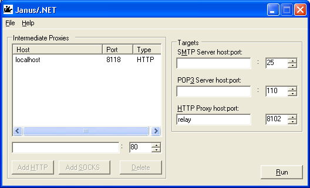
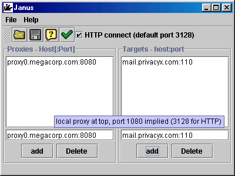

New for .Net v1.1
Experimental code to perform HTTP Basic and NTLMv2 authentication to HTTP based proxies. The only reliance on library code by the NTLM support is for the System.Security.Crypto.MD5 class - everything else for NTLM is in-line. The code is experimental in that I've tested the authentication code against a local copy of IIS, rather than against a real authenticating web proxy..
New for .Net
A re-implementation using the .NET framework's asynchronous I/O facilities that make writing an industrial strength server a trivial exercise. The main differences are that this version currently only allows three destinations (I could alter that) with suggested uses and defualt ports set appropriately; that it allows a more controllable mixture of proxies in the chain, and that it does a bit more sanity checking on the input before activating the various buttons.
Note that saved configuration files are not interchangeable between the two different implementations. The Java version uses a properties file, the .Net version an XML serialization of the objects describing the chain state.

One of these days I'll give the JDK 1.4 java.nio methods a try-out and do the same I/O upgrade for the Java version.
New at Java v1.2
Ability to give explicit ports (which may be different) for each proxy in the chain. Improved the CPU intensive loop that pumps data back and forth (thanks to user Shelby Cain for the update).
I really ought to write a Java SDK 1.4 version using the new I/O facilities which sould be even smoother.
What is it? and Why?
If you're behind a corporate firewall, you may find that you can't directly access machines outside the local network. Machines like that SMTP or POP3 server which you use to transact personal mail; or perhaps other services. But if you're able to access the Web, there is some sort of proxy running; and it may well be running SOCKS, which is a generic proxying service, or allow HTTP CONNECT requests through.
It is possible that the proxy may block obvious ports, like 25 (SMTP) or 110 (POP3) - or all low (less than 1024) ports other than 80, but still let through higher values e.g. SOCKS (on port 1080) or Squid proxies (which I've seen using port 3128); in which case you can get out to the machine you want by use of an open proxy somewhere in the outside world. Finding such a machine shouldn't take more than a few minutes with a web browser. If you find an HTTP proxy on port 80, then you can most likely use that directly, as requests on port 80 would look legitimate.
Janus, named for the Roman good of doorways, wraps up all the business of making a connection via one or more SOCKS (or HTTP) proxies, and acts as a server on your local network on behalf of a number of machines on the outside.
The two panels are managed by typing the machine names in the text area, and pressing the add button to add the entry to the end of the list above; the delete button deletes what is selected in the list above.
To add proxies, add the local proxy first, then any external proxy, either by name "proxy.megacorp.com" or address "10.70.1.46"; they are assumed to be running a SOCKS5 proxy on port 1080 (by default), or HTTP (default of 3128) - to alter from the default give the port explicitly e.g. "proxy1.megacorp.com:80".
To add target servers, give them in the form host:port - "mail.mypop3provider.com:110" or "10.70.1.42:25". Save the configuration using the save button (diskette icon), load one previously saved using the open button (folder icon). Set the process running by hitting the go button (green tick).
When running, it will listen on the same ports as the services to which it is targeted, and you can use that machine as a server. If you use Janus on machine "myhost.megacorp.com" to target a SMTP server (port25) and a POP3 server (port110), then fill in "myhost.megacorp.com" in the programs looking for mail servers, and fill in the real servers on the Janus application running on "myhost.megacorp.com".
Success status messages go to the space at the bottom of the screen; errors merit a message box. If you run the program from a command line, the relayed messages will be seen output to stdout.
Running Janus
Janus is a java1.1/Swing1.1 or Java 2+ application. Extract the janus.jar within the 7zip, add to your classpath, and run
java com.ravnaandtines.Janus
or if you have a configuration saved from a previous run
java com.ravnaandtines.Janus configfilename
and use javaw to detach the process from the command line
Source, licensing and such
Janus.7z contains the source, and a copy of the GNU General public licence. The application is freely modifiable and redistributable freeware, and ready for localization (just edit the captions in the Res.properties file).
Limitations
Of course the servers can't open connections back to your machine. This prevents FTP from being proxied except in PASV mode - and even then, the ports opened for file transfer are chosen at the instant of connection. It would require a dedicated FTP tunnelling app to handle this case. Anyone sufficiently interested should be able to put that together from this and my Java based Passive-FTP application.